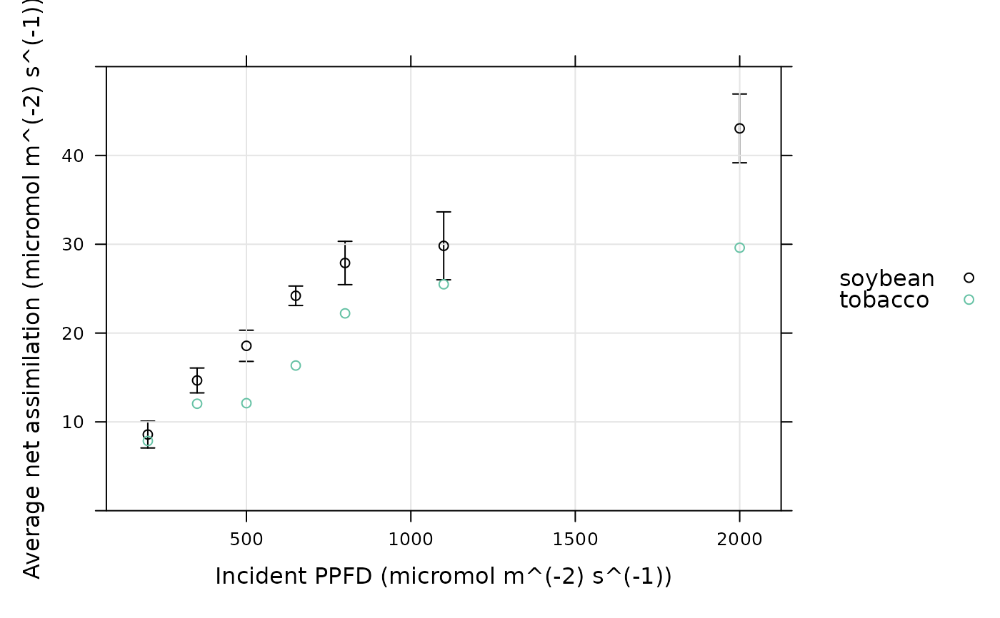

Plot average response curves with error bars
xyplot_avg_rc.RdA wrapper for lattice::xyplot that plots average response curves with
error bars.
Usage
xyplot_avg_rc(
Y,
X,
point_identifier,
group_identifier,
y_error_bars = TRUE,
x_error_bars = FALSE,
cols = multi_curve_colors(),
eb_length = 0.05,
eb_lwd = 1,
na.rm = TRUE,
subset = rep_len(TRUE, length(Y)),
...
)Arguments
- Y
A numeric vector of y-values.
- X
A numeric vector of x-values with the same length as
Y- point_identifier
A vector with the same length as
Ythat indicates the location of each (x, y) pair along the response curve; typically this is theseq_numcolumn of anexdfobject.- group_identifier
A vector with the same length as
Ythat indicates the "group" of each response curve.- y_error_bars
A logical value indicating whether to plot y-axis error bars.
- x_error_bars
A logical value indicating whether to plot x-axis error bars.
- cols
A vector of color specifications.
- eb_length
The width of the error bars.
- eb_lwd
The line width (thickness) of the error bars.
- na.rm
A logical value indicating whether or not to remove NA values before calculating means and standard errors.
- subset
A logical vector (of the same length as
Y) indicating which points to include in the final plot.- ...
Additional arguments to be passed to
lattice::xyplot.
Details
This function calculates average values of X and Y at each value
of the point_identifier across groups defined by
group_identifier, and then uses these values to plot average response
curves for each group. Error bars are determined by calculating the standard
errors of X and Y at each value of the point_identifier
across groups defined by group_identifier.
If points were excluded from the data set using remove_points
with method = 'exclude', then the include_when_fitting column
should be passed to xyplot_avg_rc as the subset input argument;
this will ensure that the excluded points are not used when calculating
average response curves.
Value
A trellis object created by lattice::xyplot.
Examples
# Read an example Licor file included in the PhotoGEA package
licor_file <- read_gasex_file(
PhotoGEA_example_file_path('ball_berry_1.xlsx')
)
# Organize the response curve data
licor_file <- organize_response_curve_data(
licor_file,
c('species', 'plot'),
c(),
'Qin'
)
# Plot the average light response curve for each species (here there is only one
# curve for tobacco, so there are no tobacco error bars)
xyplot_avg_rc(
licor_file[, 'A'],
licor_file[, 'Qin'],
licor_file[, 'seq_num'],
licor_file[, 'species'],
ylim = c(0, 50),
xlab = paste0('Incident PPFD (', licor_file$units$Qin, ')'),
ylab = paste0('Average net assimilation (', licor_file$units$A, ')'),
auto = TRUE,
grid = TRUE
)

# Exclude a few points from the data set and re-plot the average curves
licor_file <- remove_points(
licor_file,
list(obs = c(5, 10, 18)),
method = 'exclude'
)
xyplot_avg_rc(
licor_file[, 'A'],
licor_file[, 'Qin'],
licor_file[, 'seq_num'],
licor_file[, 'species'],
subset = licor_file[, 'include_when_fitting'],
ylim = c(0, 50),
xlab = paste0('Incident PPFD (', licor_file$units$Qin, ')'),
ylab = paste0('Average net assimilation (', licor_file$units$A, ')'),
auto = TRUE,
grid = TRUE
)